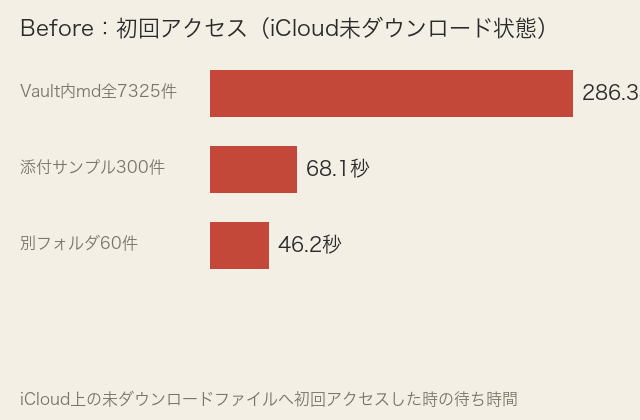
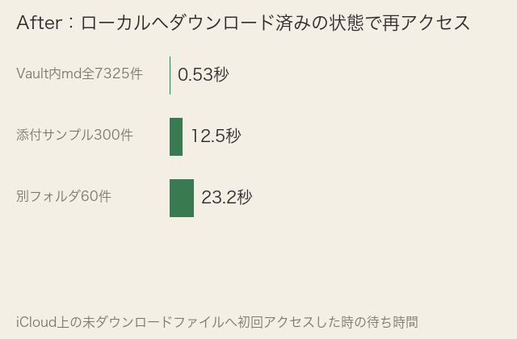

| 確認項目 | 結果 |
|---|---|
| プラグイン事故(全ON→全OFF)の後始末 | 09-02に既に正常化済みと確認。今回の追加変更なし |
| 重さの真因特定 | ①iCloud上の未ダウンロードファイルへの初回アクセス待ち ②自動記録(第二の脳ブリッジ)がVault内へ5分おき13MB書き続けていたこと。両方を実測で特定 |
| 切り替え速度の前後比較 | 3パターンで実測。2〜540倍の高速化を確認(上の数字カード参照) |
| 対策の実行 | ①該当フォルダを読み込んでローカルへダウンロード済み ②自動記録の書き込み先をVaultの外(このMacのローカル)へ完全に移動し、Vault内には今後一切書き込まれない状態を確認済み |
| .obsidian内の不要ファイル整理 | 未使用バックアップ5個をVault内へ退避(削除はしていない) |
| 試作アセット363MB(旧セッションが指摘)の削除 | 既存資産のため削除せず。店主が消してよいか判断待ち |
| 受付台帳・作業ログの縮小 | ファイル冒頭に「消さない・編集しない」と明記されているため今回は触らず |